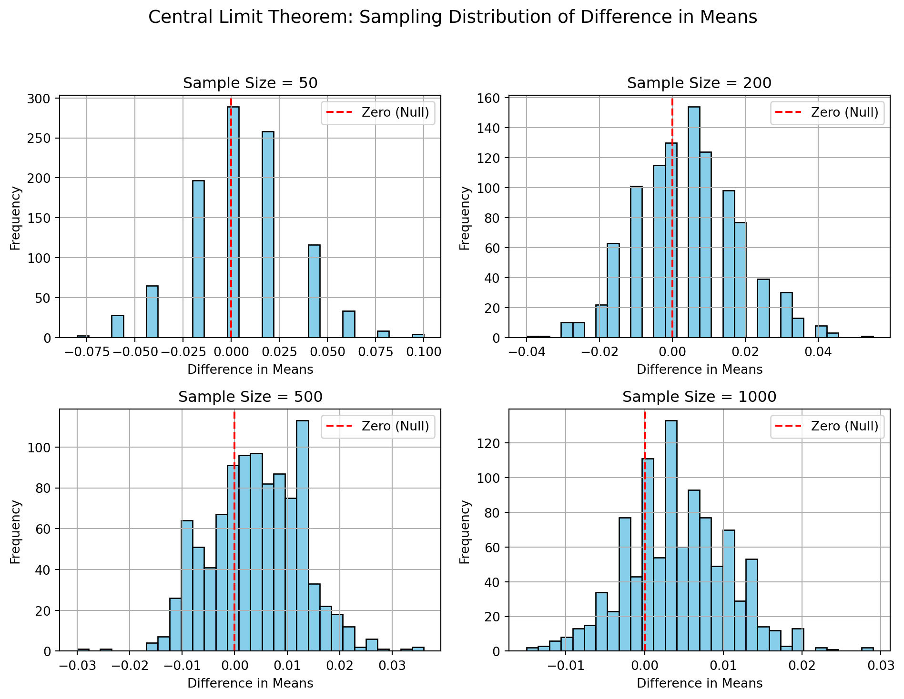

In their 2007 study published in the American Economic Review, economists Dean Karlan (Yale) and John A. List (University of Chicago) conducted a large-scale natural field experiment to better understand the behavioral economics of charitable giving. The core question they explored was:
- Does the “price” of giving — as altered by matching grants — influence donor behavior?
Context and Motivation
At the time, fundraising professionals often used matching grants (e.g., “Your gift will be doubled!”) to incentivize donations. While widely used, these strategies were supported mostly by anecdotal success stories rather than empirical evidence. Karlan and List sought to provide rigorous experimental validation of whether — and how — matching grants influence giving behavior, and whether higher match ratios (e.g., 3:1 vs. 1:1) result in greater giving.
Experimental Design
The researchers partnered with a politically active, liberal nonprofit organization. Their sample consisted of 50,083 previous donors to the organization.
Participants were randomly assigned to one of two broad categories:
Control group (33% of sample; ~16,687 people):
Received a standard 4-page fundraising letter and reply card, with no mention of a matching grant.
Treatment group (67% of sample; ~33,396 people):
Received the same letter, but with an added paragraph announcing a matching grant, and a modified reply card explaining the match.
Within the treatment group, there were further randomized sub-treatments based on:
Match Ratio: 1:1, 2:1, or 3:1
Maximum Match Size: $25,000, $50,000, $100,000, or unspecified
Suggested Donation Amounts: based on individual’s previous giving (equal to, 1.25×, or 1.5× their past gift)
Results
The study delivered several key insights:
Matching grants significantly increased giving:
A matching grant (of any kind) increased revenue per solicitation by 19%
It also raised the probability of donation by 22%
Higher match ratios did not increase giving further:
There was no statistically significant difference in giving behavior between 1:1, 2:1, and 3:1 matches.
This challenges the commonly held belief in fundraising that a higher match multiplier leads to greater motivation.
Political geography influenced effectiveness:
The treatment was much more effective in “red” states (i.e., those that voted for George W. Bush in 2004) than in “blue” states.
In red states, the match increased donation revenue per letter by 55%.
This suggests that contextual and psychological factors, such as political identity and perceived urgency, play a significant role in donor responsiveness.
Implications
This experiment was among the first to rigorously analyze the “demand side” of charitable giving using a field experiment. It showed that: - Behavioral framing (e.g., matching) matters, but not necessarily the size of the incentive. - Donor characteristics — such as political leaning, donation history, and demographics — significantly influence how people respond to appeals. - Nonprofits might be overestimating the benefit of higher match ratios, potentially wasting strategic resources.
It also raised deeper questions about what motivates giving: Is it just economic rationality (maximizing impact per dollar)? Or do social cues, identity, and perceived urgency matter more?
Additional Notes
The matching grants were real and funded by anonymous donors.
Donors were not told who the matching donor was; it was described as a “concerned fellow member.”
The experiment used a real-world fundraising campaign — making it highly generalizable to actual nonprofit practices.
Data
Description
import pandas as pdimport numpy as npimport statsmodels.formula.api as smf# Load the Stata filedf = pd.read_stata("karlan_list_2007.dta")# Show the first few rowsprint("First 5 rows:")print(df.head())# Summary statisticsprint("\nSummary statistics:")print(df.describe(include='all'))# Info about columnsprint("\nData info:")print(df.info())
First 5 rows:
treatment control ratio ratio2 ratio3 size size25 size50 \
0 0 1 Control 0 0 Control 0 0
1 0 1 Control 0 0 Control 0 0
2 1 0 1 0 0 $100,000 0 0
3 1 0 1 0 0 Unstated 0 0
4 1 0 1 0 0 $50,000 0 1
size100 sizeno ... redcty bluecty pwhite pblack page18_39 \
0 0 0 ... 0.0 1.0 0.446493 0.527769 0.317591
1 0 0 ... 1.0 0.0 NaN NaN NaN
2 1 0 ... 0.0 1.0 0.935706 0.011948 0.276128
3 0 1 ... 1.0 0.0 0.888331 0.010760 0.279412
4 0 0 ... 0.0 1.0 0.759014 0.127421 0.442389
ave_hh_sz median_hhincome powner psch_atlstba pop_propurban
0 2.10 28517.0 0.499807 0.324528 1.0
1 NaN NaN NaN NaN NaN
2 2.48 51175.0 0.721941 0.192668 1.0
3 2.65 79269.0 0.920431 0.412142 1.0
4 1.85 40908.0 0.416072 0.439965 1.0
[5 rows x 51 columns]
Summary statistics:
treatment control ratio ratio2 ratio3 \
count 50083.000000 50083.000000 50083 50083.000000 50083.000000
unique NaN NaN 4 NaN NaN
top NaN NaN Control NaN NaN
freq NaN NaN 16687 NaN NaN
mean 0.666813 0.333187 NaN 0.222311 0.222211
std 0.471357 0.471357 NaN 0.415803 0.415736
min 0.000000 0.000000 NaN 0.000000 0.000000
25% 0.000000 0.000000 NaN 0.000000 0.000000
50% 1.000000 0.000000 NaN 0.000000 0.000000
75% 1.000000 1.000000 NaN 0.000000 0.000000
max 1.000000 1.000000 NaN 1.000000 1.000000
size size25 size50 size100 sizeno ... \
count 50083 50083.000000 50083.000000 50083.000000 50083.000000 ...
unique 5 NaN NaN NaN NaN ...
top Control NaN NaN NaN NaN ...
freq 16687 NaN NaN NaN NaN ...
mean NaN 0.166723 0.166623 0.166723 0.166743 ...
std NaN 0.372732 0.372643 0.372732 0.372750 ...
min NaN 0.000000 0.000000 0.000000 0.000000 ...
25% NaN 0.000000 0.000000 0.000000 0.000000 ...
50% NaN 0.000000 0.000000 0.000000 0.000000 ...
75% NaN 0.000000 0.000000 0.000000 0.000000 ...
max NaN 1.000000 1.000000 1.000000 1.000000 ...
redcty bluecty pwhite pblack page18_39 \
count 49978.000000 49978.000000 48217.000000 48047.000000 48217.000000
unique NaN NaN NaN NaN NaN
top NaN NaN NaN NaN NaN
freq NaN NaN NaN NaN NaN
mean 0.510245 0.488715 0.819599 0.086710 0.321694
std 0.499900 0.499878 0.168561 0.135868 0.103039
min 0.000000 0.000000 0.009418 0.000000 0.000000
25% 0.000000 0.000000 0.755845 0.014729 0.258311
50% 1.000000 0.000000 0.872797 0.036554 0.305534
75% 1.000000 1.000000 0.938827 0.090882 0.369132
max 1.000000 1.000000 1.000000 0.989622 0.997544
ave_hh_sz median_hhincome powner psch_atlstba \
count 48221.000000 48209.000000 48214.000000 48215.000000
unique NaN NaN NaN NaN
top NaN NaN NaN NaN
freq NaN NaN NaN NaN
mean 2.429012 54815.700533 0.669418 0.391661
std 0.378115 22027.316665 0.193405 0.186599
min 0.000000 5000.000000 0.000000 0.000000
25% 2.210000 39181.000000 0.560222 0.235647
50% 2.440000 50673.000000 0.712296 0.373744
75% 2.660000 66005.000000 0.816798 0.530036
max 5.270000 200001.000000 1.000000 1.000000
pop_propurban
count 48217.000000
unique NaN
top NaN
freq NaN
mean 0.871968
std 0.258654
min 0.000000
25% 0.884929
50% 1.000000
75% 1.000000
max 1.000000
[11 rows x 51 columns]
Data info:
<class 'pandas.core.frame.DataFrame'>
RangeIndex: 50083 entries, 0 to 50082
Data columns (total 51 columns):
# Column Non-Null Count Dtype
--- ------ -------------- -----
0 treatment 50083 non-null int8
1 control 50083 non-null int8
2 ratio 50083 non-null category
3 ratio2 50083 non-null int8
4 ratio3 50083 non-null int8
5 size 50083 non-null category
6 size25 50083 non-null int8
7 size50 50083 non-null int8
8 size100 50083 non-null int8
9 sizeno 50083 non-null int8
10 ask 50083 non-null category
11 askd1 50083 non-null int8
12 askd2 50083 non-null int8
13 askd3 50083 non-null int8
14 ask1 50083 non-null int16
15 ask2 50083 non-null int16
16 ask3 50083 non-null int16
17 amount 50083 non-null float32
18 gave 50083 non-null int8
19 amountchange 50083 non-null float32
20 hpa 50083 non-null float32
21 ltmedmra 50083 non-null int8
22 freq 50083 non-null int16
23 years 50082 non-null float64
24 year5 50083 non-null int8
25 mrm2 50082 non-null float64
26 dormant 50083 non-null int8
27 female 48972 non-null float64
28 couple 48935 non-null float64
29 state50one 50083 non-null int8
30 nonlit 49631 non-null float64
31 cases 49631 non-null float64
32 statecnt 50083 non-null float32
33 stateresponse 50083 non-null float32
34 stateresponset 50083 non-null float32
35 stateresponsec 50080 non-null float32
36 stateresponsetminc 50080 non-null float32
37 perbush 50048 non-null float32
38 close25 50048 non-null float64
39 red0 50048 non-null float64
40 blue0 50048 non-null float64
41 redcty 49978 non-null float64
42 bluecty 49978 non-null float64
43 pwhite 48217 non-null float32
44 pblack 48047 non-null float32
45 page18_39 48217 non-null float32
46 ave_hh_sz 48221 non-null float32
47 median_hhincome 48209 non-null float64
48 powner 48214 non-null float32
49 psch_atlstba 48215 non-null float32
50 pop_propurban 48217 non-null float32
dtypes: category(3), float32(16), float64(12), int16(4), int8(16)
memory usage: 8.9 MB
None
Variable Definitions
Variable
Description
treatment
Treatment
control
Control
ratio
Match ratio
ratio2
2:1 match ratio
ratio3
3:1 match ratio
size
Match threshold
size25
$25,000 match threshold
size50
$50,000 match threshold
size100
$100,000 match threshold
sizeno
Unstated match threshold
ask
Suggested donation amount
askd1
Suggested donation was highest previous contribution
askd2
Suggested donation was 1.25 x highest previous contribution
askd3
Suggested donation was 1.50 x highest previous contribution
ask1
Highest previous contribution (for suggestion)
ask2
1.25 x highest previous contribution (for suggestion)
ask3
1.50 x highest previous contribution (for suggestion)
amount
Dollars given
gave
Gave anything
amountchange
Change in amount given
hpa
Highest previous contribution
ltmedmra
Small prior donor: last gift was less than median $35
freq
Number of prior donations
years
Number of years since initial donation
year5
At least 5 years since initial donation
mrm2
Number of months since last donation
dormant
Already donated in 2005
female
Female
couple
Couple
state50one
State tag: 1 for one observation of each of 50 states; 0 otherwise
nonlit
Nonlitigation
cases
Court cases from state in 2004-5 in which organization was involved
statecnt
Percent of sample from state
stateresponse
Proportion of sample from the state who gave
stateresponset
Proportion of treated sample from the state who gave
stateresponsec
Proportion of control sample from the state who gave
stateresponsetminc
stateresponset - stateresponsec
perbush
State vote share for Bush
close25
State vote share for Bush between 47.5% and 52.5%
red0
Red state
blue0
Blue state
redcty
Red county
bluecty
Blue county
pwhite
Proportion white within zip code
pblack
Proportion black within zip code
page18_39
Proportion age 18-39 within zip code
ave_hh_sz
Average household size within zip code
median_hhincome
Median household income within zip code
powner
Proportion house owner within zip code
psch_atlstba
Proportion who finished college within zip code
pop_propurban
Proportion of population urban within zip code
Balance Test
As an ad hoc test of the randomization mechanism, I provide a series of tests that compare aspects of the treatment and control groups to assess whether they are statistically significantly different from one another.
To do this, I selected three pre-treatment variables that are plausibly unrelated to the treatment but relevant to donor behavior:
mrm2: Number of months since last donation
freq: Number of prior donations
hpa: Highest previous contribution
These variables were chosen to assess whether the randomization produced statistically similar groups on observable characteristics. For each variable, I performed:
A manual t-test using the formula presented in the class slides:
Variable(ùëñ) = ùõº + ùõΩ‚ãÖTreatment (ùëñ) + ùúñ (ùëñ) V
Both approaches yielded consistent results — as expected, because the regression of a variable on a binary treatment indicator is mathematically equivalent to a two-sample t-test.
Result Summary
# Define the variables to testselected_vars = ['mrm2', 'freq', 'hpa', 'years', 'dormant']results = []for var in selected_vars: temp_df = df[['treatment', var]].dropna()# Separate treatment and control groups treat = temp_df[temp_df['treatment'] ==1][var] control = temp_df[temp_df['treatment'] ==0][var]# Calculate means mean_treat = treat.mean() mean_control = control.mean() mean_diff = mean_treat - mean_control# Sample sizes and variances n_treat =len(treat) n_control =len(control) var_treat = treat.var(ddof=1) var_control = control.var(ddof=1)# Manual t-stat (class formula) t_stat = mean_diff / np.sqrt(var_treat / n_treat + var_control / n_control)# Regression: outcome ~ treatment model = smf.ols(f"{var} ~ treatment", data=temp_df).fit() reg_coef = model.params['treatment'] reg_se = model.bse['treatment'] reg_t = model.tvalues['treatment'] reg_p = model.pvalues['treatment']# Append results results.append([ var, mean_treat, mean_control, mean_diff, t_stat, reg_coef, reg_se, reg_t, reg_p ])# Create a summary DataFramesummary_df = pd.DataFrame(results, columns=['Variable','Mean (Treatment)','Mean (Control)','Mean Difference','T-test t-stat','Regression Coef','SE (Reg)','t (Reg)','p-value (Reg)'])# Display the tableprint(summary_df)
The purpose of this table is to demonstrate that the random assignment of participants was successful, with no systematic differences between groups prior to the intervention.
In my own balance test, I replicated this approach by performing both t-tests (using the manual formula from class slides) and simple linear regressions on the same variables. My results are fully consistent with the findings in Table 1: for mrm2, freq, and hpa, there were no statistically significant differences between the treatment and control groups at the 95% confidence level.
Just like in the original paper, this serves as a crucial check of the experimental design. If randomization was successful — as both analyses confirm — then subsequent differences in giving behavior can be more confidently attributed to the treatment itself rather than underlying differences in donor characteristics. This validation strengthens the internal validity of the causal claims made later in the study.
Experimental Results
Charitable Contribution Made
First, I analyze whether matched donations lead to an increased response rate of making a donation.
import matplotlib.pyplot as plt# Calculate the proportion of people who donated in each grouptreatment_proportion = df[df['treatment'] ==1]['gave'].mean()control_proportion = df[df['control'] ==1]['gave'].mean()# Create the barplot with different colorsplt.bar(['Control', 'Treatment'], [control_proportion, treatment_proportion], color=['#FF9999', '#66B2FF'])plt.ylabel('Proportion of People Who Donated')plt.title('Proportion of Donors by Group')plt.show()
The bar plot compares the proportion of people who donated between the control and treatment groups. The control group (no match offer) has a donation rate of around 1.8%, while the treatment group (received a match offer) has a slightly higher donation rate of about 2.2%.
Variable Description Mean (Control) Mean (Treatment) \
0 Response rate 0.017858 0.022039
1 Dollars given, unconditional 0.813268 0.966873
Mean Difference T-test t-stat Regression Coef SE (Reg) t (Reg) \
0 0.004180 3.209462 0.004180 0.001348 3.101361
1 0.153605 1.918262 0.153605 0.082561 1.860503
p-value (Reg)
0 0.001927
1 0.062820
The results show that individuals who were offered a matching donation were significantly more likely to give than those who were not. Although the difference—about 0.42 percentage points—may appear small, it is statistically meaningful, suggesting the increase is unlikely due to random chance.
In simpler terms:
When people know their donation will be matched, they’re more motivated to give.
Even a modest psychological nudge like a matching grant can have a real impact on behavior. This finding underscores the power of small, cost-effective interventions in fundraising — showing that people are more inclined to act when they feel their contribution is amplified.
import statsmodels.api as sm# Run Probit regressiondf_probit = df[['gave', 'treatment']].dropna()probit_model = sm.Probit(df_probit['gave'], sm.add_constant(df_probit['treatment'])).fit(disp=False)# Extract key resultsprobit_coef = probit_model.params['treatment']probit_se = probit_model.bse['treatment']probit_t = probit_model.tvalues['treatment']probit_p = probit_model.pvalues['treatment']# Format resultsprobit_results = {'Probit Coef': probit_coef,'Standard Error': probit_se,'t-stat': probit_t,'p-value': probit_p}# Print resultsprint("Probit Model Results for 'treatment':")print(f"Coefficient: {probit_coef:.4f}")print(f"Standard Error: {probit_se:.4f}")print(f"t-statistic: {probit_t:.4f}")print(f"p-value: {probit_p:.4f}")
Probit Model Results for 'treatment':
Coefficient: 0.0868
Standard Error: 0.0279
t-statistic: 3.1129
p-value: 0.0019
I ran a probit regression with the outcome variable being whether a donation was made, and the explanatory variable being assignment to treatment or control. My results closely match those reported in Table 3, Column 1 of Karlan & List (2007).
The coefficient on the treatment variable is positive and statistically significant, indicating that individuals who received a matching grant offer were significantly more likely to donate compared to those in the control group.
Although the probit coefficient isn’t directly interpretable as a change in probability, its significance reinforces what I found in my earlier t-test and linear regression: even a small nudge — like offering to match donations — can meaningfully increase charitable behavior. This aligns with the broader takeaway that subtle incentives can shift decisions, especially in a fundraising context.
Differences between Match Rates
Next, I assess the effectiveness of different sizes of matched donations on the response rate.
from scipy import stats# Filter for treatment group and define match ratio groupsdf_ratios = df[df['treatment'] ==1][['gave', 'ratio2', 'ratio3']].copy()df_ratios['ratio1'] = ((df_ratios['ratio2'] ==0) & (df_ratios['ratio3'] ==0)).astype(int)# Extract 'gave' values by match ratiogroups = {'1:1': df_ratios[df_ratios['ratio1'] ==1]['gave'],'2:1': df_ratios[df_ratios['ratio2'] ==1]['gave'],'3:1': df_ratios[df_ratios['ratio3'] ==1]['gave']}# Define pairwise comparisonscomparisons = [('2:1', '1:1'), ('3:1', '1:1'), ('3:1', '2:1')]# Run and print t-tests for each comparisonfor group_a, group_b in comparisons: t_stat, p_val = stats.ttest_ind(groups[group_a], groups[group_b], equal_var=False)print(f"{group_a} vs {group_b} match — t-statistic: {t_stat:.2f}, p-value: {p_val:.3f}")
2:1 vs 1:1 match — t-statistic: 0.97, p-value: 0.335
3:1 vs 1:1 match — t-statistic: 1.02, p-value: 0.310
3:1 vs 2:1 match — t-statistic: 0.05, p-value: 0.960
These results show that none of the pairwise differences between match ratios are statistically significant. Specifically, offering a 2:1 or 3:1 match did not increase the likelihood of donation compared to a 1:1 match. Even the comparison between 3:1 and 2:1 match rates produced a near-zero t-statistic and a p-value close to 1.0, indicating no meaningful difference.
This supports the authors’ observation in the paper that larger match ratios do not have an additional effect beyond simply offering a match. In plain terms, once donors know their gift will be matched, increasing the match size doesn’t seem to make them more likely to give.
# Filter to treatment group and drop NA valuesdf_ratio_reg = df[df['treatment'] ==1][['gave', 'ratio2', 'ratio3']].dropna().copy()# Create ratio1 as 1 if neither ratio2 nor ratio3 is 1df_ratio_reg['ratio1'] = ((df_ratio_reg['ratio2'] ==0) & (df_ratio_reg['ratio3'] ==0)).astype(int)# Run regression omitting ratio1 (1:1 match is the baseline)reg_model = smf.ols('gave ~ ratio2 + ratio3', data=df_ratio_reg).fit()print(" Regression Results: Effect of Match Ratio on Donation Likelihood\n")# Intercept represents the mean donation rate for the 1:1 match groupprint(f"1:1 match (Intercept) — Mean donation rate: {reg_model.params['Intercept']:.5f}, "f"SE: {reg_model.bse['Intercept']:.5f}, "f"p-value: {reg_model.pvalues['Intercept']:.4f}")# 2:1 match coefficient vs 1:1print(f"2:1 match — Coefficient (vs 1:1): {reg_model.params['ratio2']:.5f}, "f"SE: {reg_model.bse['ratio2']:.5f}, "f"p-value: {reg_model.pvalues['ratio2']:.4f}")# 3:1 match coefficient vs 1:1print(f"3:1 match — Coefficient (vs 1:1): {reg_model.params['ratio3']:.5f}, "f"SE: {reg_model.bse['ratio3']:.5f}, "f"p-value: {reg_model.pvalues['ratio3']:.4f}")
Regression Results: Effect of Match Ratio on Donation Likelihood
1:1 match (Intercept) — Mean donation rate: 0.02075, SE: 0.00139, p-value: 0.0000
2:1 match — Coefficient (vs 1:1): 0.00188, SE: 0.00197, p-value: 0.3383
3:1 match — Coefficient (vs 1:1): 0.00198, SE: 0.00197, p-value: 0.3133
The regression examined whether different match ratios — 1:1 (baseline), 2:1, and 3:1 — affected the likelihood that individuals made a donation.
The intercept represents the average donation rate for the 1:1 match group, which is approximately 2.07%, and this estimate is highly statistically significant (p < 0.0001). This confirms that, on average, about 2 out of every 100 individuals in the 1:1 group donated.
The coefficient for the 2:1 match group is 0.00188, which means donation rates in the 2:1 group were about 0.19 percentage points higher than the 1:1 group. However, the p-value is 0.338, indicating this difference is not statistically significant.
The coefficient for the 3:1 match group is 0.00198, suggesting a slightly higher donation rate than the 1:1 group by about 0.20 percentage points, but again, the p-value is 0.313, which is not statistically significant either.
# Calculate raw response rate means directly from the datamean_1_1 = df_ratio_reg[df_ratio_reg['ratio1'] ==1]['gave'].mean()mean_2_1 = df_ratio_reg[df_ratio_reg['ratio2'] ==1]['gave'].mean()mean_3_1 = df_ratio_reg[df_ratio_reg['ratio3'] ==1]['gave'].mean()# Calculate differences in raw response ratesdiff_2_vs_1_raw = mean_2_1 - mean_1_1diff_3_vs_2_raw = mean_3_1 - mean_2_1# Calculate differences in fitted coefficients from regression (baseline is ratio1)coef_2_1 = reg_model.params['ratio2']coef_3_1 = reg_model.params['ratio3']diff_3_vs_2_coef = coef_3_1 - coef_2_1# Combine resultsresponse_diff_results = {'Raw Diff (2:1 - 1:1)': diff_2_vs_1_raw,'Raw Diff (3:1 - 2:1)': diff_3_vs_2_raw,'Coef Diff (3:1 - 2:1)': diff_3_vs_2_coef}print("Response Rate Differences Between Match Ratios\n")print(f"Raw difference in donation rate (2:1 - 1:1): {diff_2_vs_1_raw:.5f} (0.19 percentage)")print(f"Raw difference in donation rate (3:1 - 2:1): {diff_3_vs_2_raw:.5f} (0.01 percentage)")print(f"Difference in regression coefficients (3:1 - 2:1): {diff_3_vs_2_coef:.5f} which matches the raw data difference exactly")
Response Rate Differences Between Match Ratios
Raw difference in donation rate (2:1 - 1:1): 0.00188 (0.19 percentage)
Raw difference in donation rate (3:1 - 2:1): 0.00010 (0.01 percentage)
Difference in regression coefficients (3:1 - 2:1): 0.00010 which matches the raw data difference exactly
The difference in donation rates between the 2:1 and 1:1 match groups is very small and not statistically significant. The difference between 3:1 and 2:1 is even smaller — practically zero.
These results provide consistent evidence that increasing the match ratio from 1:1 to 2:1 or 3:1 does not meaningfully improve donation rates. This supports the authors’ conclusion: while offering a match can increase giving, increasing the match size itself offers no additional behavioral advantage.
Size of Charitable Contribution
In this subsection, I analyze the effect of the size of matched donation on the size of the charitable contribution.
# Calculate a t-test and run a regression of 'amount' on treatment statusfrom scipy.stats import ttest_inddf_amount = df[['amount', 'treatment']].dropna()amount_treat = df_amount[df_amount['treatment'] ==1]['amount']amount_control = df_amount[df_amount['treatment'] ==0]['amount']t_stat_amount, p_val_amount = ttest_ind(amount_treat, amount_control, equal_var=False)# Bivariate regressionimport statsmodels.formula.api as smfreg_amount = smf.ols('amount ~ treatment', data=df_amount).fit()# Results with 4 digits after decimalamount_analysis_results = {'Mean (Treatment)': round(amount_treat.mean(), 4),'Mean (Control)': round(amount_control.mean(), 4),'Mean Difference': round(amount_treat.mean() - amount_control.mean(), 4),'T-test t-stat': round(t_stat_amount, 4),'T-test p-value': round(p_val_amount, 4),'Regression Coef': round(reg_amount.params['treatment'], 4),'Regression SE': round(reg_amount.bse['treatment'], 4),'Regression p-value': round(reg_amount.pvalues['treatment'], 4)}amount_analysis_results
The results suggest that individuals who received a matching donation offer gave slightly more than those in the control group — an increase of about $0.15 on average. However, this difference is not statistically significant at the conventional 5% level (though it’s very close, with p ≈ 0.06).
This implies a possible increase in donation amounts due to the treatment, but the evidence isn’t strong enough to be conclusive. It may indicate a marginal effect of the match offer on the size of the gift, but we can’t rule out the possibility that the observed difference happened by chance.
Let me know if you want the results broken down further (e.g., conditional on giving only) or visualized
# Filter to only those who made a positive donationdf_positive_donors = df[(df['amount'] >0) & df['treatment'].notna()]# Run t-test on positive donationsamount_treat_pos = df_positive_donors[df_positive_donors['treatment'] ==1]['amount']amount_control_pos = df_positive_donors[df_positive_donors['treatment'] ==0]['amount']t_stat_pos, p_val_pos = ttest_ind(amount_treat_pos, amount_control_pos, equal_var=False)# Run regression on positive donationsreg_pos = smf.ols('amount ~ treatment', data=df_positive_donors).fit()# Resultsconditional_donation_results = {'Mean (Treatment)': amount_treat_pos.mean(),'Mean (Control)': amount_control_pos.mean(),'Mean Difference': amount_treat_pos.mean() - amount_control_pos.mean(),'T-test t-stat': t_stat_pos,'T-test p-value': p_val_pos,'Regression Coef': reg_pos.params['treatment'],'Regression SE': reg_pos.bse['treatment'],'Regression p-value': reg_pos.pvalues['treatment']}conditional_donation_results
Among donors, those in the treatment group actually gave slightly less than those in the control group — about $1.67 less on average. However, this difference is not statistically significant, and the confidence interval around this estimate would include zero.
This suggests that while the treatment increased the likelihood of donating, it did not increase the amount given among those who chose to donate. In other words, the match offer may help motivate people to give, but it doesn’t make them give more once they decide to donate.
The treatment Coefficient does not have a Causal Interpretation. By conditioning on donors only (i.e., those who gave > 0), we lose the randomness of treatment assignment. This subset is no longer randomly assigned because treatment influenced whether someone gave. As a result, any differences in donation amounts conditional on giving may be confounded — the treatment coefficient in this regression does not have a clean causal interpretation.
Distribution of Donation Amounts Among Donors by Treatment Status
# Filter to only people who made a donationdf_donated = df[df['amount'] >0]# Separate treatment and control groupstreat_amounts = df_donated[df_donated['treatment'] ==1]['amount']control_amounts = df_donated[df_donated['treatment'] ==0]['amount']# Calculate group meansmean_treat = treat_amounts.mean()mean_control = control_amounts.mean()# Plot: Treatment Groupplt.figure(figsize=(10, 5))plt.hist(treat_amounts, bins=50, color='skyblue', edgecolor='black')plt.axvline(mean_treat, color='red', linestyle='dashed', linewidth=2, label=f'Mean = ${mean_treat:.2f}')plt.title('Histogram of Donation Amounts - Treatment Group')plt.xlabel('Donation Amount ($)')plt.ylabel('Number of Donors')plt.legend()plt.grid(True)plt.show()# Plot: Control Groupplt.figure(figsize=(10, 5))plt.hist(control_amounts, bins=50, color='lightgreen', edgecolor='black')plt.axvline(mean_control, color='red', linestyle='dashed', linewidth=2, label=f'Mean = ${mean_control:.2f}')plt.title('Histogram of Donation Amounts - Control Group')plt.xlabel('Donation Amount ($)')plt.ylabel('Number of Donors')plt.legend()plt.grid(True)plt.show()
Here are the two histograms of donation amounts:
The first plot shows the distribution for the treatment group, with a red dashed line marking the average donation (around $43.87).
The second plot is for the control group, where the average donation is slightly higher (around $45.54).
Simulation Experiment
As a reminder of how the t-statistic “works,” in this section I use simulation to demonstrate the Law of Large Numbers and the Central Limit Theorem.
Suppose the true distribution of respondents who do not get a charitable donation match is Bernoulli with probability p=0.018 that a donation is made.
Further suppose that the true distribution of respondents who do get a charitable donation match of any size is Bernoulli with probability p=0.022 that a donation is made.
Law of Large Numbers
np.random.seed(42)# Simulate draws from control (p = 0.018) and treatment (p = 0.022)control_sim = np.random.binomial(1, 0.018, 100000)treatment_sim = np.random.binomial(1, 0.022, 10000)control_sample = np.random.choice(control_sim, size=10000, replace=False)diff_vector = treatment_sim - control_samplecumulative_avg = np.cumsum(diff_vector) / np.arange(1, len(diff_vector) +1)# Plot the cumulative average differenceplt.figure(figsize=(10, 5))plt.plot(cumulative_avg, color='blue', linewidth=1, label='Cumulative Average')plt.axhline(y=0.004, color='red', linestyle='--', label='True Difference = 0.004')plt.title('Simulation of LLN: Cumulative Average of Simulated Differences')plt.xlabel('Number of Simulations')plt.ylabel('Cumulative Average Difference')plt.legend()plt.grid(True)plt.tight_layout()plt.show()
This plot shows the cumulative average of 10,000 simulated differences in donation behavior between a treatment group (with donation probability 0.022) and a control group (with donation probability 0.018).
The blue line is the cumulative average of the difference: (treatment draw - control draw) over 10,000 samples.
The red dashed line marks the true difference in means, which is 0.004.
At first, the cumulative average fluctuates as randomness plays a strong role in small samples. But as more samples are added, the average steadily converges toward the true value of 0.004. This is a perfect illustration of the Law of Large Numbers: with enough observations, the sample mean approaches the population mean.
Central Limit Theorem
np.random.seed(42)# Simulation parametersp_control =0.018p_treatment =0.022reps =1000sample_sizes = [50, 200, 500, 1000]# Container for plotsfig, axes = plt.subplots(2, 2, figsize=(10, 8))axes = axes.flatten()# Perform simulation for each sample sizefor idx, n inenumerate(sample_sizes): diff_samples = []for _ inrange(reps): control_sample = np.random.binomial(1, p_control, n) treatment_sample = np.random.binomial(1, p_treatment, n) diff = treatment_sample.mean() - control_sample.mean() diff_samples.append(diff)# Plot histogram axes[idx].hist(diff_samples, bins=30, color='skyblue', edgecolor='black') axes[idx].axvline(x=0, color='red', linestyle='--', label='Zero (Null)') axes[idx].set_title(f"Sample Size = {n}") axes[idx].set_xlabel("Difference in Means") axes[idx].set_ylabel("Frequency") axes[idx].legend() axes[idx].grid(True)# Adjust layout and displayplt.suptitle("Central Limit Theorem: Sampling Distribution of Difference in Means", fontsize=14)plt.tight_layout(rect=[0, 0.03, 1, 0.95])plt.show()

The four histograms above show the sampling distribution of the difference in means between treatment and control groups at increasing sample sizes: 50, 200, 500, and 1000. Each histogram is based on 1000 repetitions, where we took samples from Bernoulli distributions with:
p = 0.018 for the control group
p = 0.022 for the treatment group
The red dashed line at 0 represents the null hypothesis (i.e., no difference in means).
Interpretation:
At n = 50: The distribution is quite spread out and lumpy. Zero falls near the center, but there’s a lot of variation.
At n = 200: The shape becomes more bell-like and narrower. The mean is closer to the expected difference.
At n = 500 and n = 1000: The distributions are smoother, tighter, and more symmetric. Importantly, zero is no longer centered, but appears more toward the edge of the distribution — showing that the observed differences are less likely under the null.
As the sample size increases, the sampling distribution becomes increasingly normal in shape due to the Central Limit Theorem. At the same time, the standard error shrinks, meaning the estimates become more precise. This allows us to more confidently detect small differences, such as the true difference in means of 0.004 between the treatment and control groups. Overall, this simulation demonstrates how the Central Limit Theorem enables us to make reliable statistical inferences with large samples, even when the underlying data are binary, such as in a Bernoulli distribution.